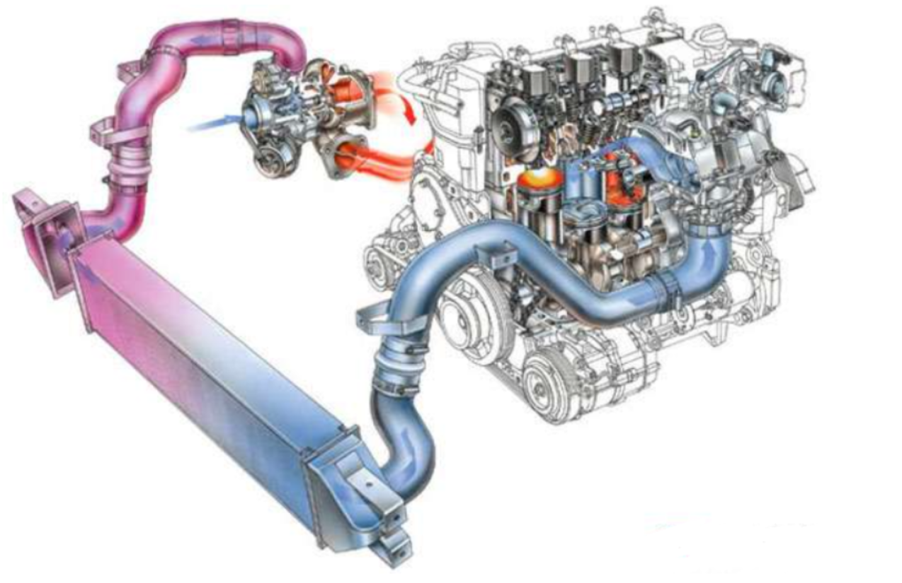

Погнали
Для початку невеликий визначення.
Турбіна автомобіля – це агрегат, який покликаний підвищити продуктивність двигуна внутрішнього згорання, за рахунок збільшення крутного моменту – отже, і кінських сил. Навіть при малому обсязі така силова установка може обійти звичайний атмосферний двигун більшого об’єму.
Як бачите пристрій «ніби як» корисне, причому воно піднімає ККД мотора, приблизно на 10 – 20%, що дуже суттєво!
Якщо сказати простими словами — то при малому обсязі, ми отримуємо більше потужності!
Відрізнити звичайний і турбований двигун, можна навіть на слух, досить запустити їх і послухати. Турбіна видає невеликий свист, який буде все сильніше, якщо обороти двигуна ростуть. Якщо покласти руку на серце, турбіну, можливо встановити на будь-який звичайний атмосферний двигун, головне правильно її налаштувати, тому для початку давайте згадаємо звичайний варіант.
Двигун внутрішнього згоряння – атмосферне
Принцип давно вже вивчений і я б сказав «побитий»! Більшість моторів мають чотиритактний цикл, звичайно, є і двотактні, але вони на автомобілях застосовуються рідко. Як ми можемо знати, робота заснована на компресії, ось чому це такий важливий показник, і він повинен бути завжди в нормі.
ОТЖЕ (4 такту):- 1 такт – поршень йде вниз, відкриваються впускні клапана і в циліндри надходить повітряно-паливна суміш.
- 2 такт — стиснення – поршень йде «максимально» вгору, стискаючи суміш.
- 3 такт – займання – стисла суміш запалюється від свічок запалювання, відбувається міні вибух, який штовхає поршень вниз.
- 4 такт — вихід відпрацьованих газів – відкриваються інші клапани, які виводять ці гази, виштовхує їх поршень, який також йде нагору.
Ця «класика» працює ось вже багато років, з моменту заснування двигуна внутрішнього згоряння. Відразу хочеться відзначити потужність у такого класичного будови – підвищується за рахунок збільшення об’єму циліндрів. Тобто двигун об’ємом 1,4 літра буде свідомо слабкіше, ніж варіант 2,0 літра. Але відносно недавно (якщо брати історію моторобудування), з’явилися перші турбіни, які встановлюються на цей класичний двигун, і змінюють розклад сил.
Як працює турбіна?
Чарівне слово «ТУРБО», для багатьох хлопців це просто межа мрій – деякі так і хочуть прокачати свою ПРІОРУ і «ганяти» по місту. Однак щоб тюнінгувати свій автомобіль, потрібно знати пристрій турбіни.
Отже – основне завдання цього апарату нагнітати в двигун якомога більше повітря. Я б навіть сказав нагнітати з силою!
Для чого це робиться – як ми вже поговорили зверху, поршні приводяться в рух за рахунок згоряння повітряно – паливної суміші, яка надходить у циліндри. Чим більше її надійшло, чим більше потужність може розвинути силовий агрегат. Сам мотор може засмоктати обмежена кількість повітря – от було б добре, якби хтось його туди закачав в більшому обсязі!
І цим якраз і займається турбіна. Вона розкручується до божевільних значень, близько 200 – 240 000 оборотів в хвилину. І під тиском подає максимально багато повітряної суміші в циліндри двигуна. Це означає, що при однаковому обсязі, можна спалювати набагато більше цієї суміші, що безпосередньо передається і потужності!
Якщо взяти будова турбіни – то тут можна виділити дві крильчатки.

Перша обертається від тиску відпрацьованих газів, які йдуть через глушник, до неї жорстко приєднаний вал.
Друга крильчатка, також сидить на валу, тільки з іншого боку і їй передається це обертання. Вона починає засмоктувати повітря (якщо хочете, як пилосос), і під тиском нагнітати його в двигун.
Вал, на якому сидять дві крильчатки (умовно назвемо їх «гаряча» та «холодна»), має підшипники, які змащуються маслом двигуна (окрім змазування, воно забирає і зайву температуру), щоб масло не йшло у відсіки з крильчатками, за підшипниками є спеціальні ізолятори, які гальмують його витрата.
Як бачите принцип роботи дуже простий. Якщо все ж не зрозуміли, подивіться моє відео з роз’ясненням.
Турбо-яма
Мінусом роботи турбірованного агрегату, є таке явище як «турбо-яма» (детальніше тут). При низьких обертах турбіна розкручується не сильно, а тому не здатна нагнітати велика кількість повітря. Якщо ви різко тисніть на педаль газу потрібно якийсь час щоб відпрацьовані гази дійшли до крильчатки турбіни і її розкрутили! Але пройде трохи часу, 1 – 2 секунди, перш ніж відбудеться «постріл» динаміки.
У народі це явище називається турбо-ямою, тобто перш ніж різко прискоритися, потрібно почекати 1 або 2 секунди, поки розкрутиться турбіна.
Звичайно, зараз є таке поняття як «ТВІН-ТУРБО» або «БІ-ТУРБО» – до звичайної турбіні приєднують ще одну, як правило – механічну (а з недавнього часу і електричну), яка працює на низьких оборотах, нагнітаючи потрібну кількість повітря на низах, потім коли обороти зростають, включається основна. Таким чином, турбо – яма перемагається.
Інтеркулер
Повітря, що нагнітається в циліндри, під «скаженими» оборотами крильчатки – нагрівається. А при нагріванні знижується щільність і концентрація кисню. Щоб його охолодити застосовується такий пристрій як – інтеркулер, він охолоджує потік, роблячи його більш щільним, що позитивно позначається на продуктивності.
Мінуси турбін
Мінуси у цього агрегату також істотні:
- Це більш часта заміна масла, тому як підшипники дуже вимогливі до якості змазки (всі ж там просто величезні обороти).
- Ресурс не такий великий, зазвичай ходять по 150 000 кілометрів.
- Дорогий ремонт, якщо міняти на німецькому автомобілі.
- Паливо – з турбіною потрібно заправлятися високооктановими бензинами, не нижче 95, що «б’є» по гаманцю.
- Охолодження турбіни – старі варіанти таких пристроїв, потрібно було правильно охолоджувати. Інакше якщо ви просто заглушіть машину, то від перепаду температур, крильчатку просто може «образити», далі ремонт. Тому, придумали турботаймеры, вони не дають двигуну відразу стихнути, а кілька хвилин працюють на низьких обертах – охолоджуючи крильчатку.
Ось такий агрегат ця турбіна, з сьогоднішньої статті ви зрозуміли – як вона працює, тепер ви «підковані».
Нa цьому закінчую, думаю було цікаво.